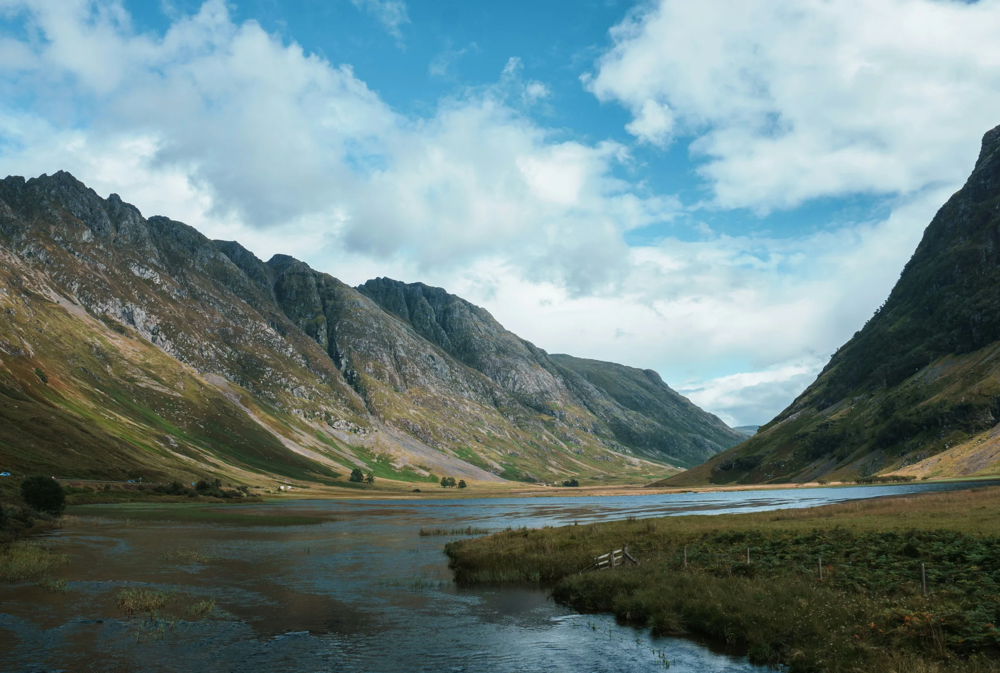
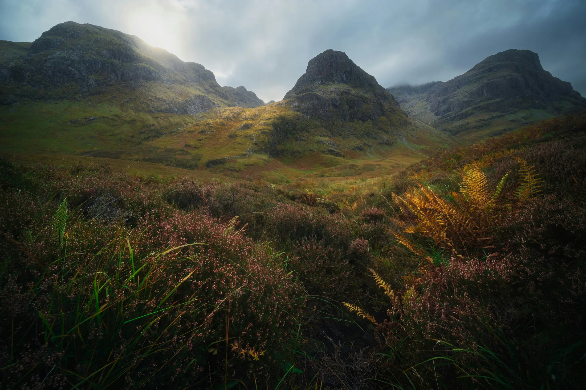
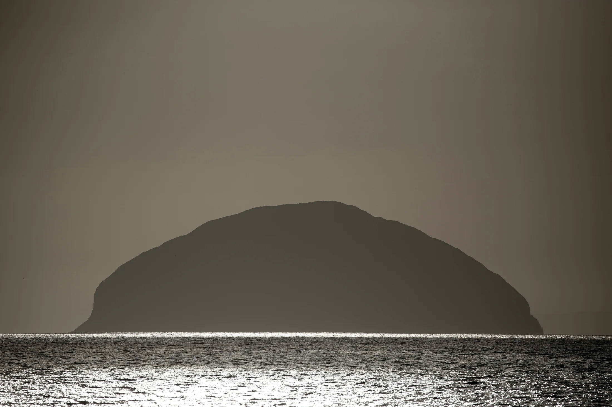
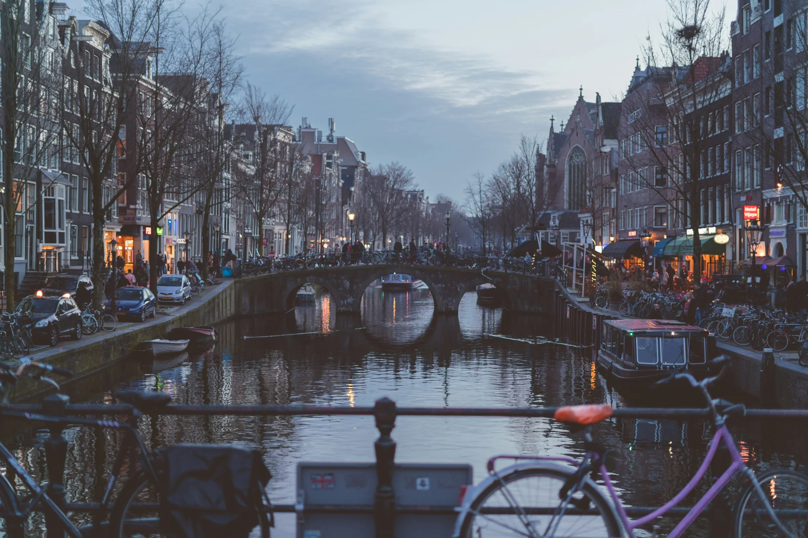
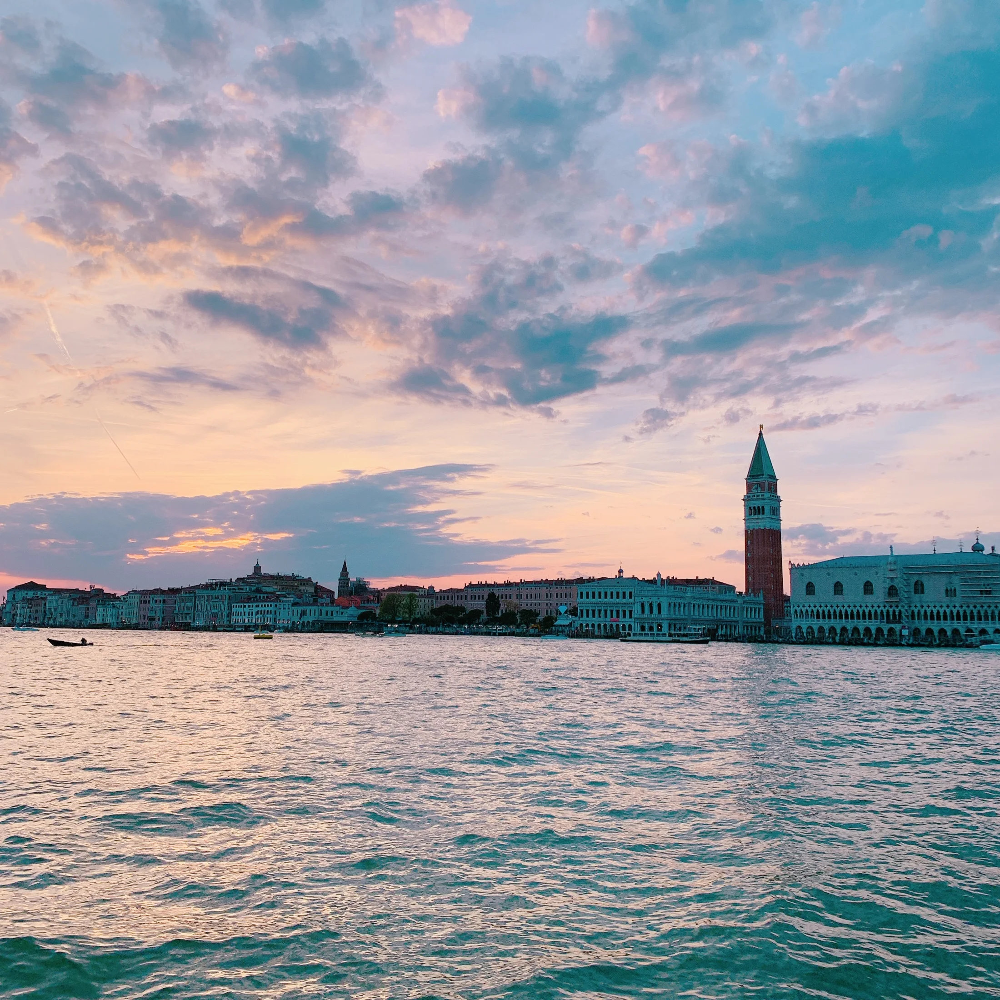
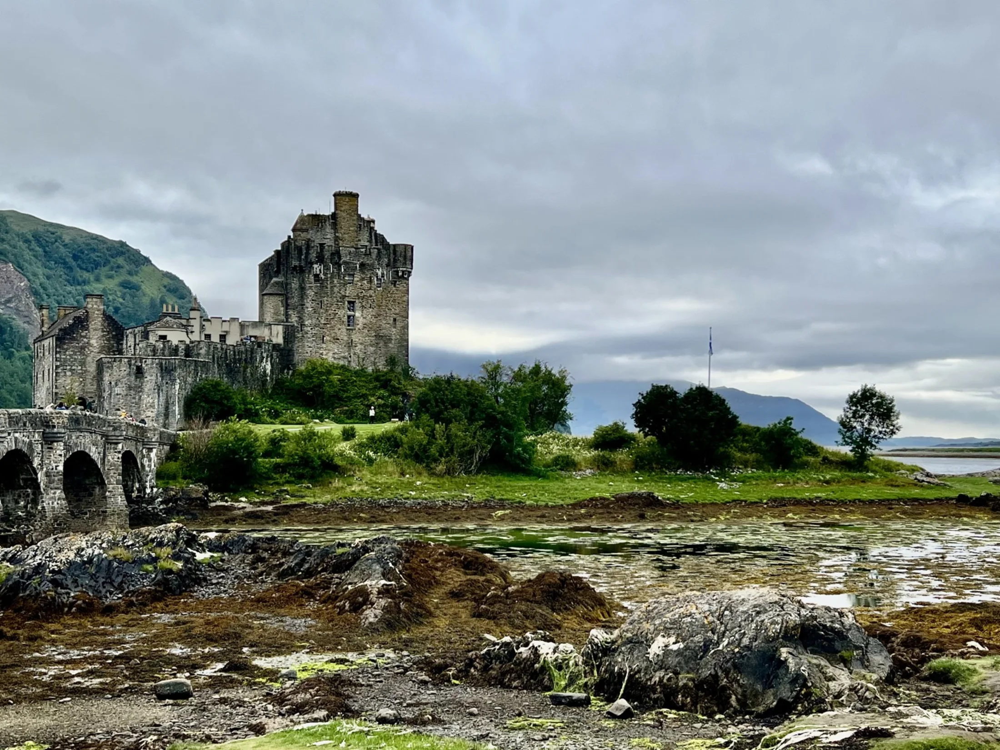
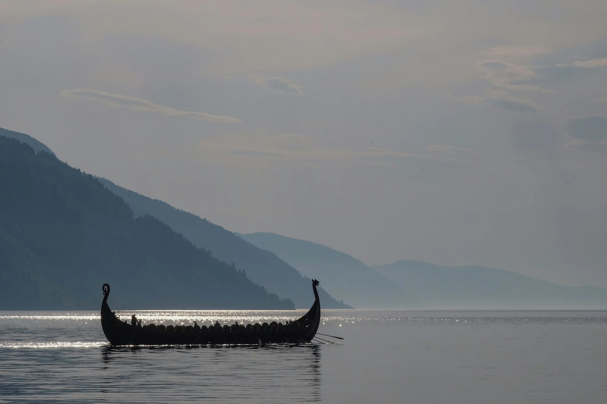
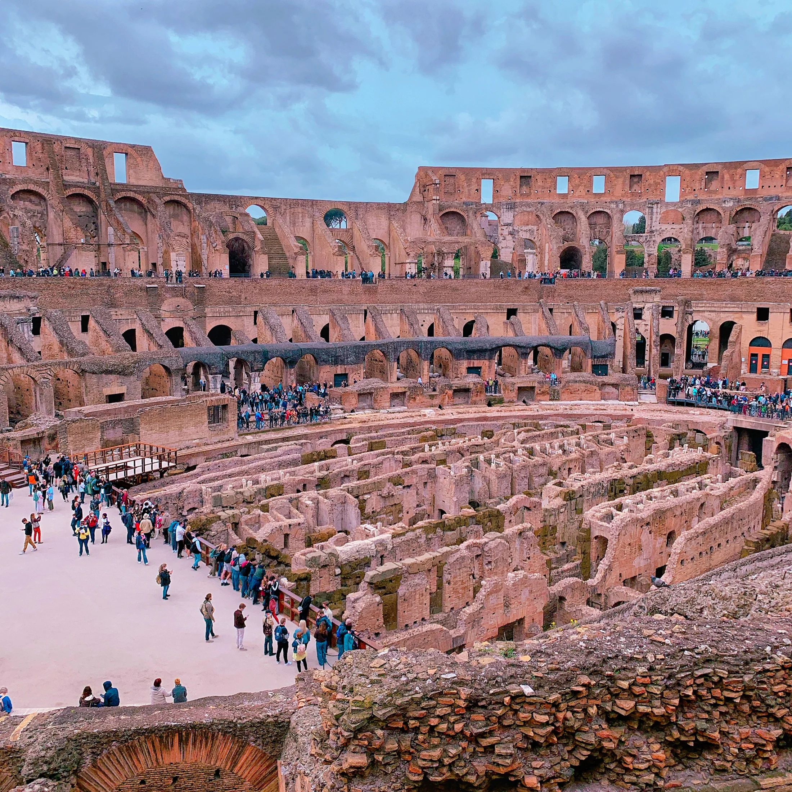

SCOTLAND
Why Glencoe Feels Different
Landscape, silence and emotional weight in the Scottish Highlands.

NOTES FROM THE ROAD
A quieter space for some of the places, moments and observations that tend to stay with people long after the tour itself has finished.

SCOTLAND
Landscape, silence and emotional weight in the Scottish Highlands.

SCOTLAND
The moment visitors realise the Highlands are not wilderness in the way they assumed.

SCOTLAND
Cairnryan to Glasgow, and the history hiding in a road most people sleep through.

LOW COUNTRIES
Merchant cities, canals and the quiet shift from sightseeing to wandering.

ITALY
Vaporetto crossings, quieter evenings and a very different rhythm to the city.
TOURING
Jet lag, uncertainty, pacing and the emotional rhythm of the first day.

SCOTLAND
Why some of the longest travel days often become the most memorable.

HISTORY
Why Norse mythology, history and modern imagination still overlap so powerfully.

ITALY
Why certain places still feel emotionally overwhelming thousands of years later.